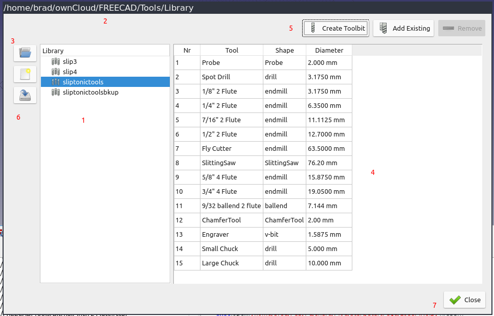
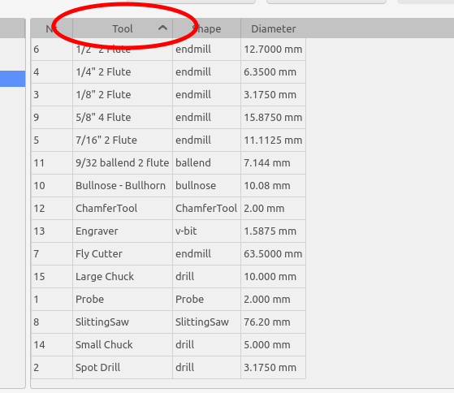

CAM WerkzeugbitBibliothekÖffnen
| This page is incomplete; it was marked as unfinished on the wiki. |
 CAM WerkzeugbitBibliothekÖffnen
CAM WerkzeugbitBibliothekÖffnen
- Menu location
-
- Workbenches
- Default shortcut
-
None
- Introduced in version
-
0.19
- See also
Beschreibung
Der Befehl  Werkzeugbit-Bibliothek-Editor dient zum Erstellen, Verwalten und Organisieren von Werkzeugbits. Beim Starten des Bibliotheksmanagers wird dieser als modales Dialogfeld angezeigt.
Werkzeugbit-Bibliothek-Editor dient zum Erstellen, Verwalten und Organisieren von Werkzeugbits. Beim Starten des Bibliotheksmanagers wird dieser als modales Dialogfeld angezeigt.
Von hier aus kann der Benutzer alle Aufgaben im Zusammenhang mit der Verwaltung von Werkzeugbits ausführen:
-
Standardbibliothek auswählen
-
Werkzeugbits erstellen/bearbeiten/löschen
-
Bibliotheken erstellen
-
Bibliotheken durch Hinzufügen und Entfernen von Werkzeugbits ändern
-
Bibliothek unter neuem Namen speichern
-
Bibliothek in das LinuxCNC-Werkzeugtabellenformat (.tbl) exportieren
Nur das Erstellen neuer Werkzeugformen kann nicht über den Werkzeugbit-Bibliotheksmanager erfolgen. Dies ist ein fortgeschrittenes Thema. (Siehe CAM Werkzeugform erstellen).

Der Bibliotheksmanager
Der linke Bereich (1) zeigt eine Liste aller Bibliotheken im aktuellen Arbeitsverzeichnis. Die aktuelle Bibliothek ist hervorgehoben.
Der Pfad des aktuellen Arbeitsverzeichnisses wird in der Titelleiste des Fensters (2) angezeigt. Mit einem Dateiauswahlfeld (3) kann ein anderes Arbeitsverzeichnis ausgewählt werden.
Der rechte Bereich (4) zeigt alle Werkzeugbits in der aktuell ausgewählten Bibliothek an. Durch Doppelklicken in die linke Spalte kann die Standard-Werkzeugnummer für dieses Werkzeugbit geändert werden. Die Werkzeugnummer wird beim Erstellen einer Werkzeugsteuerung verwendet. Die Nummer ist ein Attribut der Bibliothek. Das bedeutet, dass dasselbe Werkzeugbit in mehreren Werkzeugbibliotheken vorhanden sein kann und in jeder Bibliothek eine andere Standard-Werkzeugnummer haben kann.
Die Werkzeuge oben (5) dienen zum Erstellen/Hinzufügen/Entfernen von Werkzeugbits aus der aktuellen Bibliothek.
Mit der Schaltfläche Speichern unter (6) kann die Bibliothek in eine neue Datei geschrieben werden oder in ein gültiges Tooltable-Format exportiert werden. Derzeit wird nur das LinuxCNC-Format unterstützt.
Der Manager speichert die zuletzt verwendete Werkzeug-Bibliothek und das Arbeitsverzeichnis zwischen den einzelnen Verwendungen.
Die Schaltfläche Schließen (7) unten rechts schließt den Werkzeug-Bibliotheksmanager. Alle Änderungen an der aktuellen Bibliothek werden auf der Festplatte gespeichert. Durch Drücken der Escape-Taste wird der Manager geschlossen, ohne dass Änderungen an der aktuellen Bibliothek vorgenommen werden. Die Bibliothek, die beim Schließen des Managers ausgewählt ist, wird zur neuen Standardbibliothek und wird in der Werkzeugbit-Ablage angezeigt.
Anwendung
-
Es gibt mehrere Möglichkeiten, den Werkzeugbit-Bibliotheksmanager zu öffnen:
-
Die Option aus dem Menü wählen.
-
Die Werkzeugbit-Auswahl wie beschrieben öffnen und die Schaltfläche Werkzeugbit-Bibliotheksmanager öffnen drücken.
-
-
Eine Bibliothek aus der Liste auswählen.
-
Erstellen/Hinzufügen/Entfernen von Werkzeugbits aus der Bibliothek.
-
Auf eine Zeile doppelklicken, um den Werkzeugbit zu bearbeiten.
-
Den Manager schließen.
-
Die ausgewählte Bibliothek wird zur Standardbibliothek für die Ablage.
Werkzeugbits bearbeiten
Es gibt mehrere Möglichkeiten, die Werkzeugbits und die Bibliothek zu bearbeiten:
-
Durch Klicken auf die Spaltenüberschriften der Bibliothek kann die Werkzeugbit-Bibliothek sortiert werden. Die Bibliothek behält die Sortierung bei und verwendet sie in der Ablage.
::

Die Werkzeugbibliothek über die Spaltenüberschriften sortieren
-
Durch Doppelklicken in die erste Spalte kann die Werkzeugnummer bearbeitet werden. Dies ist die Standard-Werkzeugnummer, die beim Erstellen einer neuen Werkzeugsteuerung verwendet wird. Es ist möglich, dieselbe Nummer für mehrere Werkzeuge zu verwenden.
::

Auf die erste Spalte doppelklicken, um die Werkzeugnummer zu bearbeiten
-
Durch Doppelklicken auf eine beliebige andere Stelle in der Zeile wird das Bearbeitungsfeld für das Werkzeug geöffnet. Hier können weitere Eigenschaften des Werkzeugs bearbeitet werden.
::

Das Bearbeitungsfeld für das Werkzeug öffnen, indem auf eine beliebige andere Stelle in der Zeile geklickt wird.